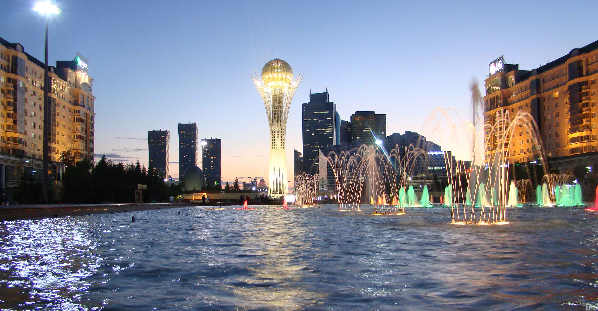
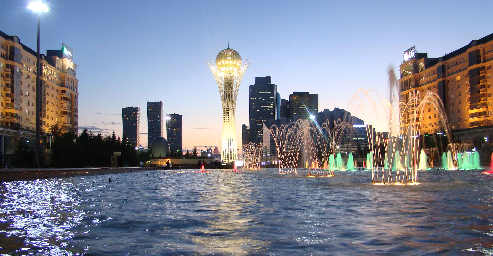

Astana, previously known as Akmolinsk, Tselinograd, Akmola, and most recently Nur-Sultan, is the capital city of Kazakhstan.
At present :
Astana is located in the center of Kazakhstan in the dry steppe zone, a subzone of dry tipchak-feather grass steppe. The territory of the city is a low terrace above the flood-plain. The Esil River is the main waterway of the capital. The climate is sharply continental - cold and long winter and hot, moderately arid summer. The city lies on the banks of the Ishim River in the north-central part of Kazakhstan, within the Akmola Region, though administered as a city with special status separately from the rest of the region.
 
